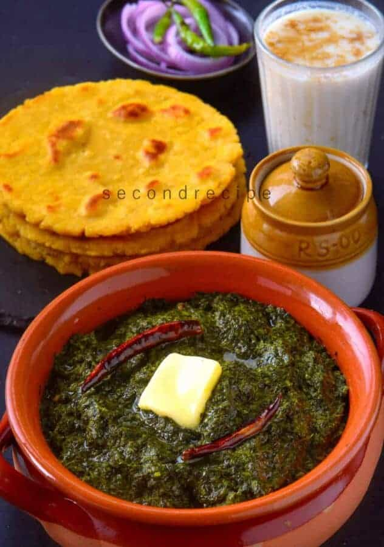
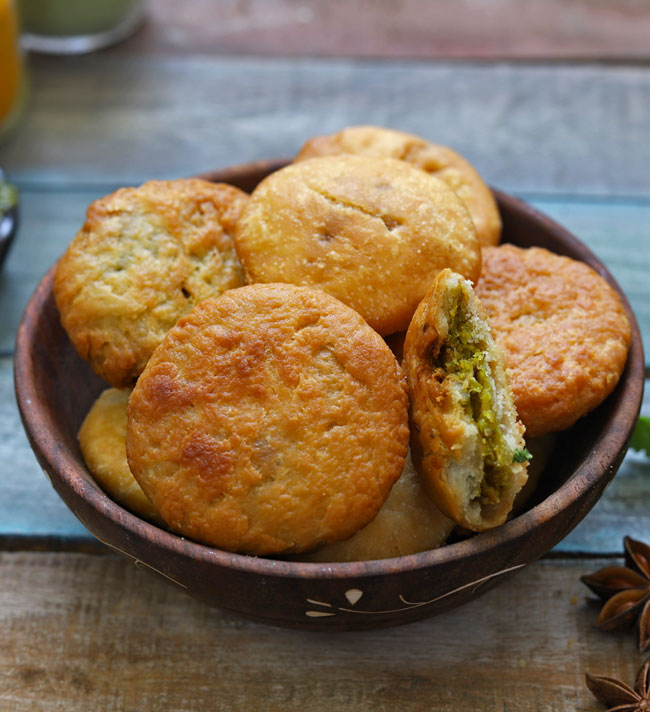
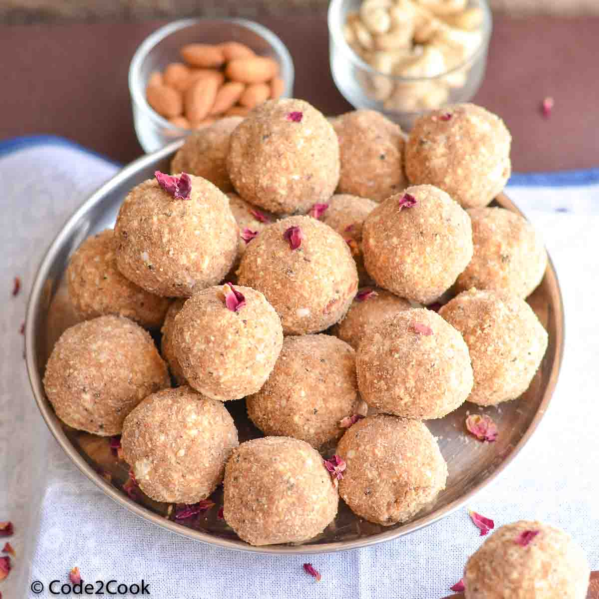
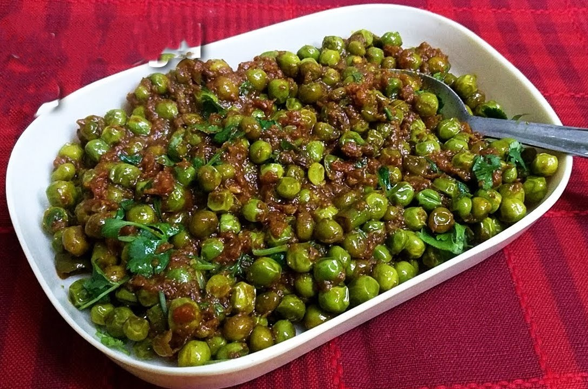
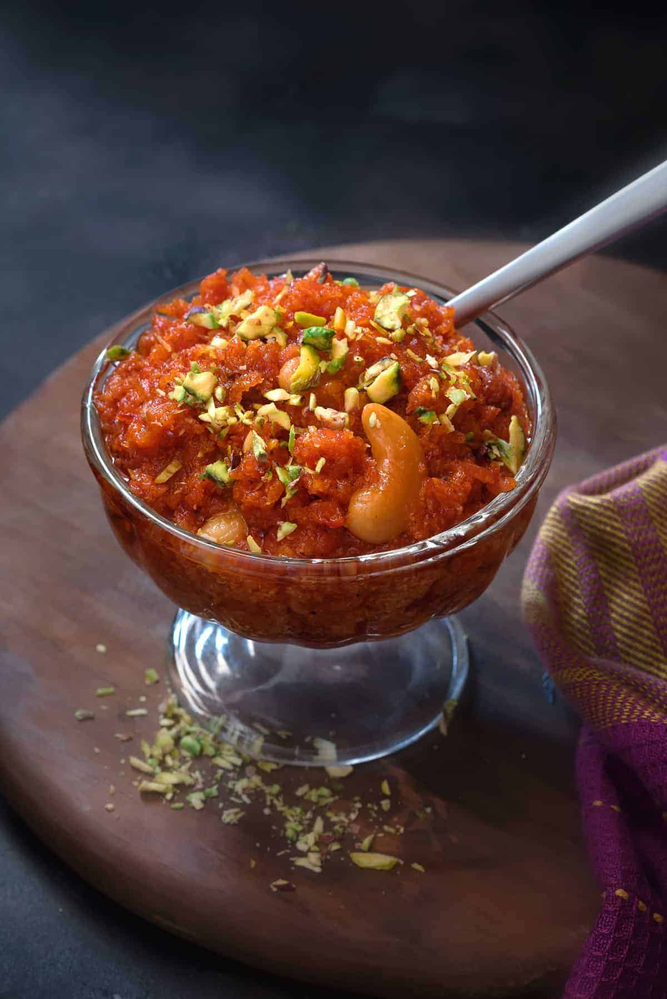

Cozy Vibes With Delicious Food
Cook These Dishes In Winter.....
Enjoy With Friends Family And With Your Loved Once
Our Top Picks For You

Sarso Ka Saag
Nimona Ki Sabji

Matar Ki Kachori

Gond Ke Laddu

Matar Ki Ghugri
